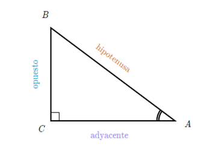
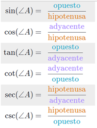
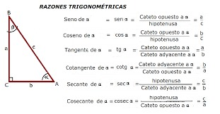

Relación entre ángulos y lados de un triángulo rectángulo
Todo triángulo rectángulo tiene exactamente dos ángulos agudos.
-
La hipotenusa es mayor que cualquiera de los catetos.
-
La hipotenusa es menor que la suma de los dos catetos.
En geometría, se llama triángulo rectángulo a todo triángulo que posee
un ángulo recto, es decir, un ángulo de 90 grados.1 Las razones entre las
longitudes de los lados de un triángulo rectángulo es un enfoque de la
trigonometría plana. En particular, en un triángulo rectángulo, se cumple
el llamado teorema de Pitágoras ya conocido por los babilonios.
Razones Trigonométricas:
Se le llaman Razones trigonométricas o Relaciones trigonométricas, a la
razón (cociente) existente entre los lados de un triángulo rectángulo.
Las seis relaciones trigonométricas para el Angulo θ se definen por:
-
Seno (Sin)
-
Coseno (Cos)
-
Tangente (Tan)
-
Secante (Sec)
-
Cosecante (Csc)
-
Cotangente (Cot)
 
Ejemplo:
Si tenemos un triángulo rectángulo con ángulos A B C y el ángulo C es
recto entonces tenemos que:
A + B = 90º (Los ángulos interiores de un triángulo siempre suman 180º
asi que A + B + C = 180 Si sabemos que C = 90º podemos sustiturlo en la
ecuación. A + B + 90 = 180 Si despejamos A + B queda A + B = 180 - 90)
Por lo tanto A y B son ángulos complementarios (juntos suman 90º)
Si nombramos los lados de nuestro triángulo con a b c y tenemos que
c es la hipotenusa y a y b son catetos, tenemos que:
sen (A) = a / c (a es el cateto opuesto a A)
cos (B) = a / c (a es el cateto adyacente a B)
Como puedes ver el seno de A se representa igual que el coseno de B.

Relaciones métricas:
Las relaciones métricas del triángulo rectángulo son cuatro, entre ellas,
3 triángulos formados trazan la altura relativamente a la hipotenusa son
rectángulos y semejantes.
La hipotenusa es igual a la suma de las proyecciones:
A = M + N
Por semejanza de triángulos, tenemos que:
-
El cuadrado de la altura relativa de los catetos.

-
El cuadrado de un cateto, es igual al producto entre su proyección
(que se encuentra de su lado) y la hipotenusa.
-
El producto entre la hipotenusa y la altura relativa a ella, es igual
al producto de los catetos.
(que se encuentra de su lado) y la hipotenusa.
al producto de los catetos.